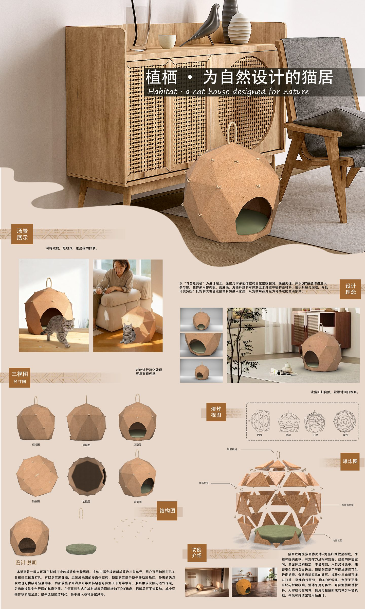
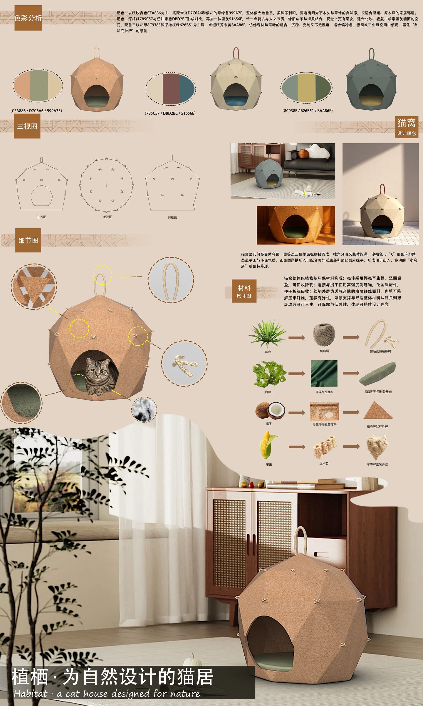
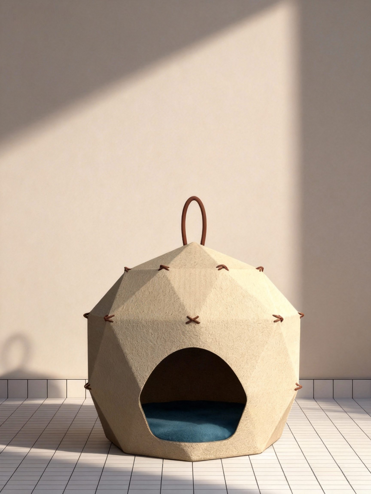
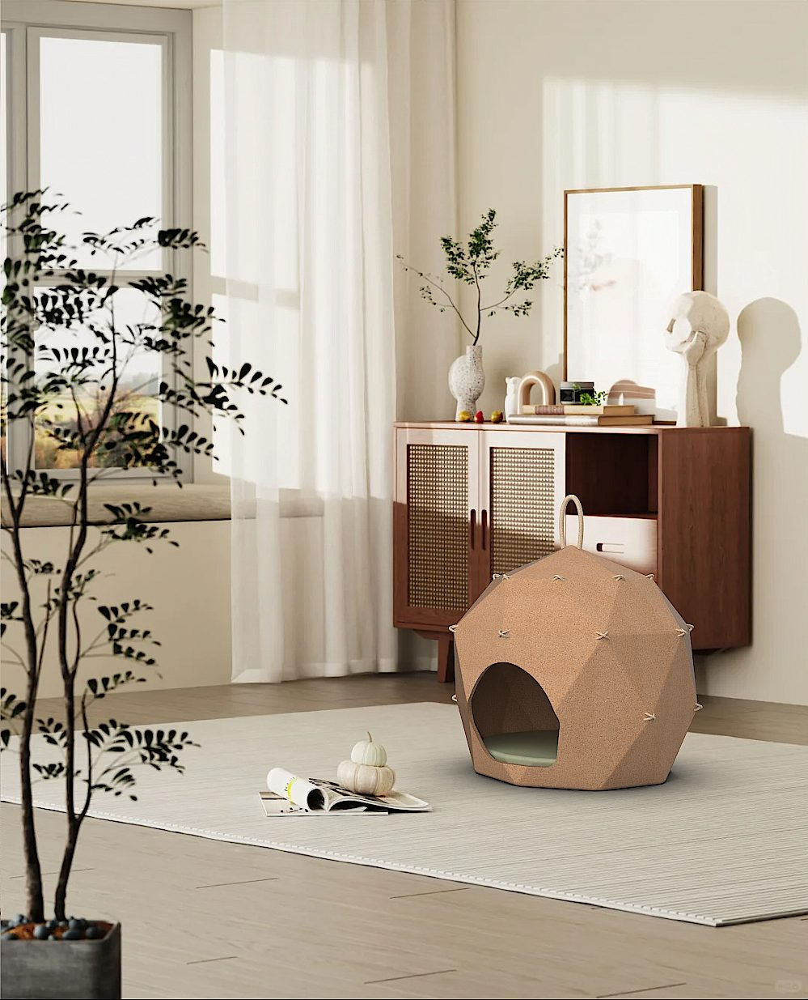
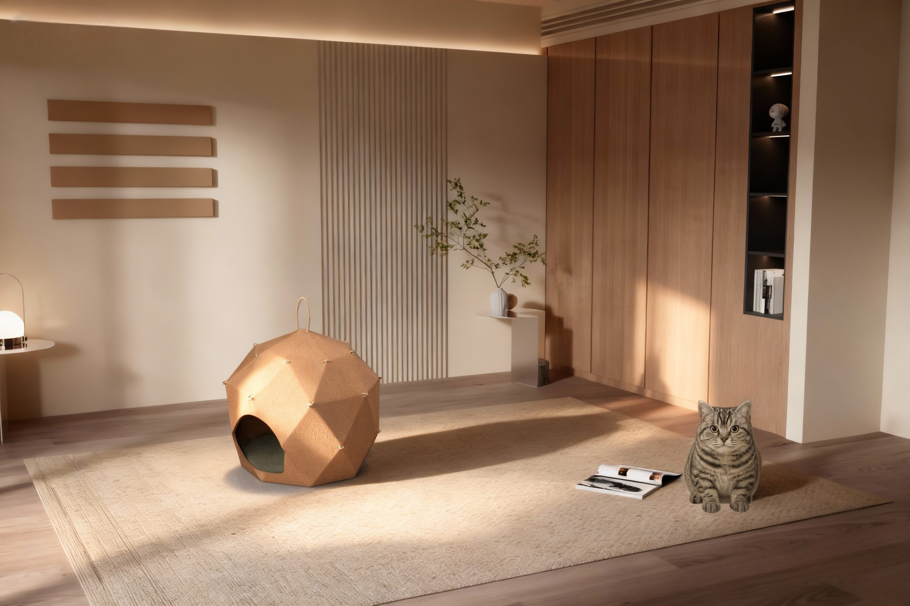
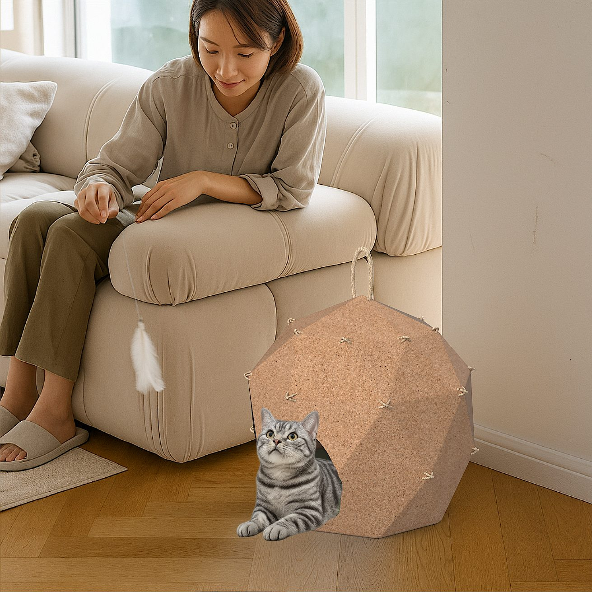
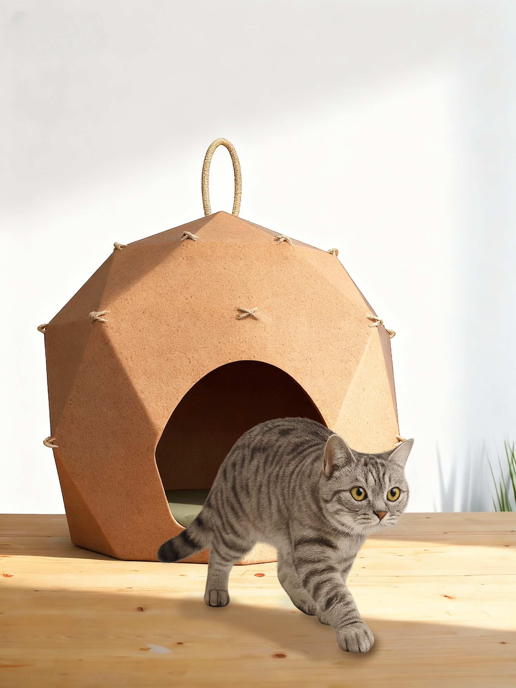
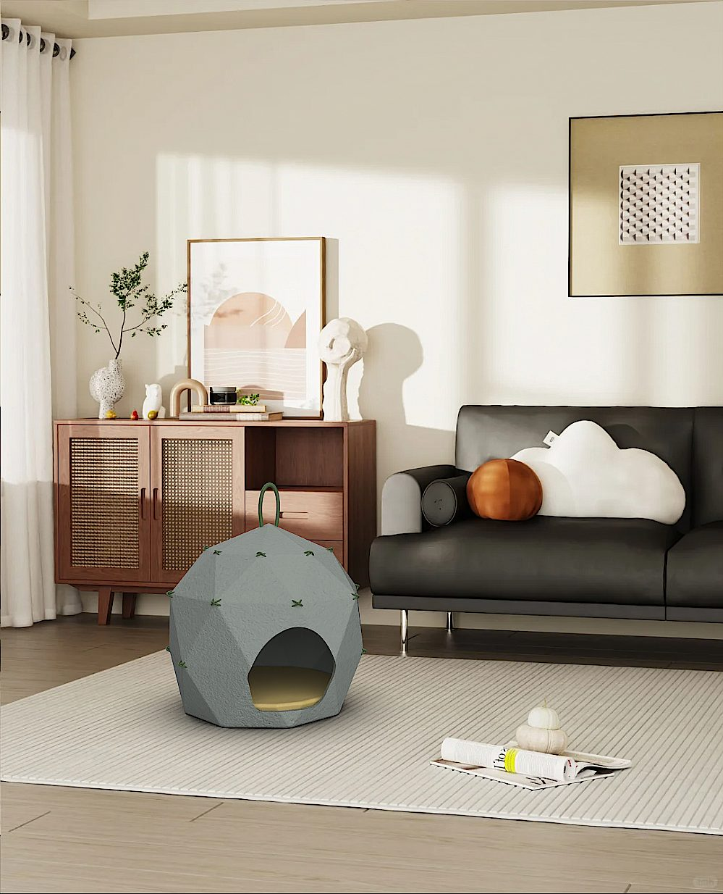
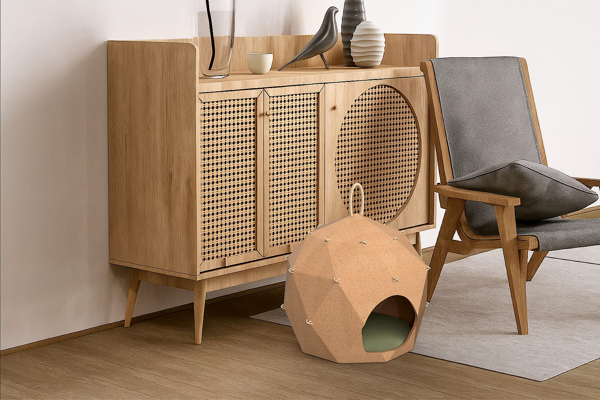

03 / 宠物家居用品
植栖
猫窝
以 “与自然共栖” 为设计理念，几何多面体结构适配猫咪钻躲天性，支持 DIY 拼装增强主人参与感；采用椰壳板、剑麻绳、可降解植物基材，可拆解回收降低环境负担，大地色系适配各类家居，将宠物用品升级为可持续生活家具









03 / 宠物家居用品
以 “与自然共栖” 为设计理念，几何多面体结构适配猫咪钻躲天性，支持 DIY 拼装增强主人参与感；采用椰壳板、剑麻绳、可降解植物基材，可拆解回收降低环境负担，大地色系适配各类家居，将宠物用品升级为可持续生活家具








